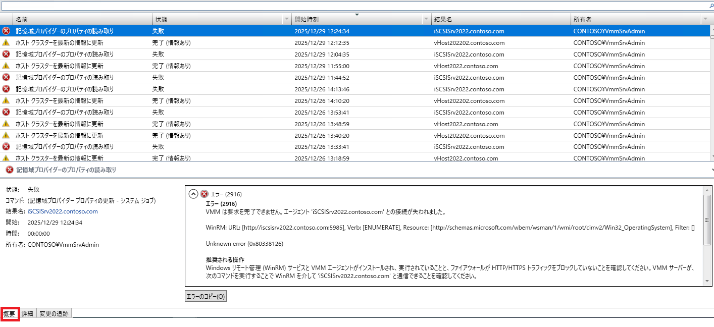
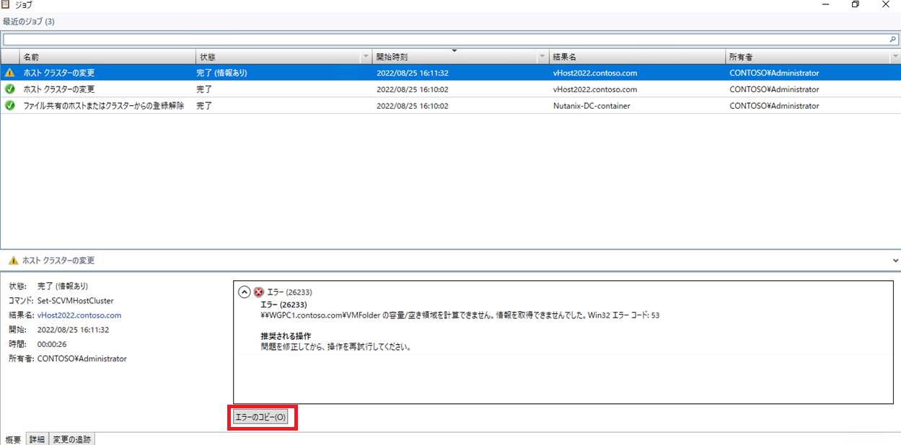
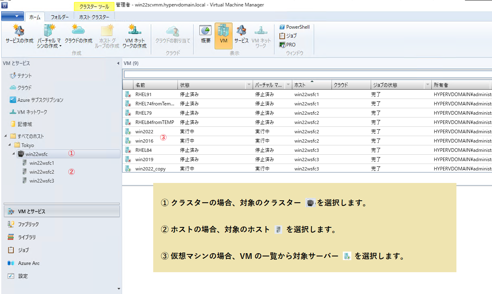
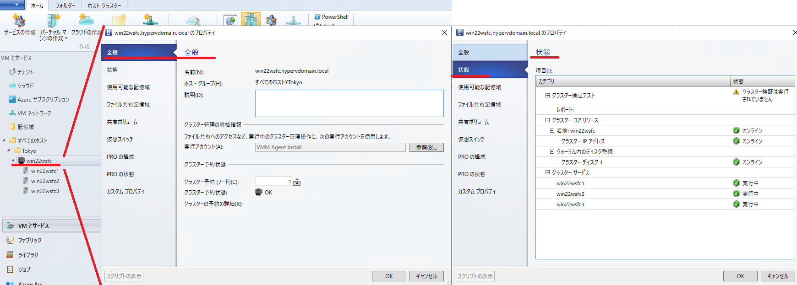
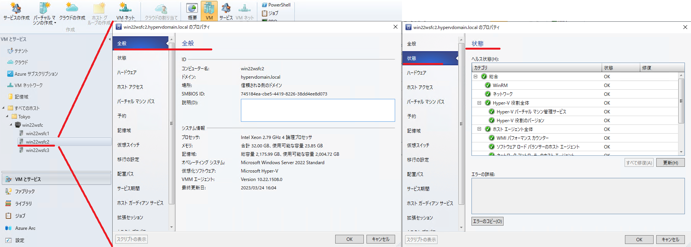
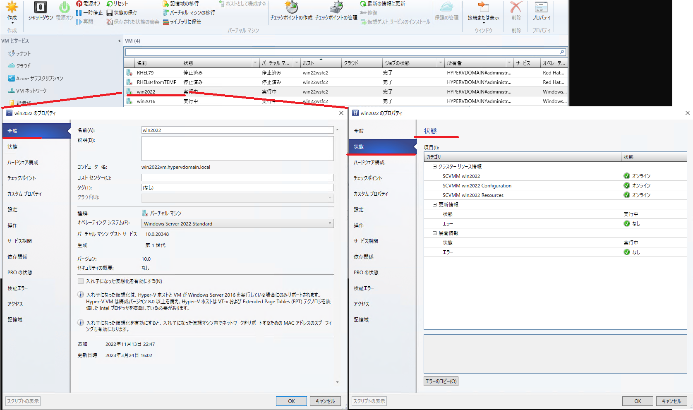

皆様こんにちは、System Center サポートチームの 石原 です。
本記事は、System Center Virtual Machine Manager （以後、SCVMM） で発生したトラブルの調査を行う際に採取いただく機会が多いログ等の取得方法について解説します。
[トラブルシューティングに必要な情報]
SCVMM のトラブルシューティングの際には、お客様環境と SCVMM の動作を把握するために以下の情報をお送りいただいております。
本記事では、各々の取得目的と取得手順について解説します。
| No | 項目 | 取得目的 |
|---|---|---|
| 1 | トレースログとエラー情報 | 再現可能な不具合動作が発生した場合、事象再現中のトレースログを取得することで、処理の流れを追いかけて原因調査します。 |
| 2 | ジョブ一覧 | SCVMM のジョブが正常終了しなかった場合、ジョブ一覧にて実行ジョブの名称、実行時間、発生したエラーなどを確認します。 |
| 3 | SCVMM 環境情報 | お客様環境を把握するための情報です。取得対象は、SCVMM サーバー情報, ホスト情報, 仮想マシン情報の3 種類です。 |
| 4 | クラスター/ホスト/仮想マシンのプロパティ画面 | お客様環境を把握するための情報です。取得対象は、問題が発生している [クラスター/ホスト/仮想マシン] のプロパティ画面です。 |
| 5 | SCVMM エラーログ | SCVMM にてエラーが発生した場合や、SCVMM コンソールがエラーで異常終了した場合の調査に使用します。 |
| 6 | イベントログ | 不具合動作が発生した時間帯のイベントログを確認して、該当時間の OS や SCVMM の状態を確認します。 |
[No.1 トレースログとエラー情報]
想定外の事象が発生した際に、事象を再現して、その間の動作を記録するトレースログは、原因調査で最も有益な情報になります。
トレース ログの調査においては、エラーが発生した日時や正確なエラー文章の特定も重要となります。
トレースログと、エラー文章の情報取得方法をご紹介します。
■ トレース ログ取得手順
SCVMM サーバーと問題が発生している仮想マシンの展開先仮想化ホストサーバー ( Hyper-V サーバー) において、以下の手順で並行して情報を採取してください。
- コマンド プロンプトを管理者として実行します。
- VMM フォルダー（C:\VMMlogs）を作成します。
- 以下のコマンドを順番に実行して VMM トレースの採取を開始します。
- 事前準備 ①
【実施対象】 SCVMM サーバー【実施対象】SCVMM サーバーおよび、問題が発生している仮想化ホストサーバー1
logman delete VMM
(※) 上記コマンドを実行した際に “データ コレクター セットが見つかりませんでした。” というメッセージが表示される場合があります。特に問題ありませんので、そのまま進めてください。1
2logman delete WinRM
logman delete WMI - 事前準備 ②
【実施対象】 SCVMM サーバー【実施対象】SCVMM サーバーおよび、問題が発生している仮想化ホストサーバー1
logman create trace VMM -v mmddhhmm -ow -o C:\VMMlogs\%computername%_VMMLog.ETL -p Microsoft-VirtualMachineManager-Debug -nb 16 16 -bs 1024 -mode Circular -f bincirc -max 2048
(※) “C:\VMMLogs” 直下に -max オプションにて、それぞれ最大2GBを上限値としてトレース ファイルを取得します。1
2logman create trace WinRM -v mmddhhmm -ow -o C:\VMMlogs\%computername%_WinRM.ETL -p Microsoft-Windows-WinRM 0xffff 0x5 -nb 16 16 -bs 1024 -mode Circular -f bincirc -max 2048
logman create trace WMI -v mmddhhmm -ow -o C:\VMMlogs\%computername%_WMI.ETL -p WMI_Tracing 0xffff 0x5 -nb 16 16 -bs 1024 -mode Circular -f bincirc -max 2048
実施の際は、事前に C ドライブの空き容量をご確認いただくか、容量の大きなドライブをご指定ください。 - 取得開始 ( C:\VMMLogs フォルダ配下に etl ファイルが作成されます。 )
【実施対象】 SCVMM サーバー【実施対象】SCVMM サーバーおよび、問題が発生している仮想化ホストサーバー1
logman start VMM
1
2logman start WinRM
logman start WMI
- 事象の再現手順を実行します。 ※ この処理中のトレースログを解析に使用します。
- 以下のコマンドを順番に実行してトレースの採取を停止します。
【実施対象】 SCVMM サーバー【実施対象】SCVMM サーバーおよび、問題が発生している仮想化ホストサーバー1
2logman stop VMM
logman delete VMM1
2
3
4logman stop WinRM
logman stop WMI
logman delete WinRM
logman delete WMI - 以下のコマンドを各 etl ファイルに対して実行してトレースファイルをコンバートします（.txt ファイルが生成されます）。(※) <各 ETL ファイル> には、WMI、WinRM、VMMLog と3種類ございます。
1
netsh trace convert C:\VMMLogs\<コンピューター名>_<各ETLファイル>.etl
- C:\VMMLogs フォルダを圧縮して、弊社までお寄せください。
■ エラー情報取得手順
エラーの発生状況によって、以下のいずれかの情報を取得します。
① ジョブ結果でエラーが発生する事象の場合
各種操作設定や設定変更を行い、それを実行したところ、ジョブでエラーが発生することが、SCVMM で発生する一般的なエラー発生状況となります。
この場合は、以下の手順に沿った情報を取得します。
- SCVMM サーバーに管理者権限でログインし、SCVMM コンソールを開きます。
- コンソール上部の [ホーム] タブを選択し、タブ内の [ジョブ] をクリックします。

- 表示されたジョブの一覧より、今回実施されたジョブの実行結果が確認いただけるスクリーンショットを採取します。
スクリーンショットは [概要] タブを開いた画面に加え、[詳細] タブを開いた画面に対して取得します。
採取を行う画面としては、一例として以下のような画面が確認いただけるように採取を行ってください。

- でスクリーンショットを採取されたジョブに対して、エラー内容下部に表示された [エラーのコピー] をクリックし、そのコピーされたエラー内容をテキストエディタにペーストした上で .txt ファイルとして保存します。

- でスクリーンショットを採取されたジョブに対して、エラー内容下部に表示された [エラーのコピー] をクリックし、そのコピーされたエラー内容をテキストエディタにペーストした上で .txt ファイルとして保存します。
- および 4. のファイルを 1 つのフォルダに纏めて圧縮いただき、弊社までお寄せください。
② ジョブ実行前にポップアップ等でエラーが表示され、ジョブが記録されない場合
設定保存時にポップアップが発生して設定を保存できないなどして、ジョブを実行する前にエラーが発生する場合があります。
この場合、ジョブも実行できていない状態となるので、ジョブからエラー内容や実行時間を特定してトレース調査、とすることができません。
この状態の場合は、ポップアップ等エラー内容が表示されている項目と、エラー発生時の OS 日時が確認できるようにスクリーンショットを取得し、そちらをお寄せいただきます。
[No.2 ジョブ一覧]
SCVMM で実行したジョブが正常終了しなかった場合、ジョブ一覧を確認することで、実行したジョブと発生したエラー、エラーメッセージが確認できます。
ジョブ一覧の取得方法は下記の通りです。
■ 取得手順
- SCVMM 管理サーバーに管理者権限でログインします。
- 事前に、C ドライブの直下に “temp” という名前のフォルダを作成します。
- スタートメニューより [Virtual Machine Manager Command Shell] を実行します。
- 以下のコマンドを実行します。
1
Get-SCJOB -All -Full | export-csv -path "C:\temp\scjob.csv" -encoding UTF8
- “temp” フォルダに出力された “scjob.csv” を弊社までお寄せください。
[No.3 SCVMM 環境情報 (SCVMM サーバー情報, ホスト情報, 仮想マシン情報)]
問題が発生している環境とご利用状況を把握する必要がある場合、SCVMM のバージョン情報、SCVMM で管理されているホストの情報、仮想マシンの情報をお送りいただいております。
各情報の取得方法は下記の通りです。
■ 取得手順
- SCVMM 管理サーバーに管理者権限でログインします。
- 事前に、C ドライブの直下に “temp” という名前のフォルダを作成します。
- スタートメニューより [Virtual Machine Manager Command Shell] を実行します。
- 以下のコマンドを実行して SCVMM サーバー情報を取得します。例）Get-SCVMMServer -ComputerName “VMMServer01.Contoso.com” | export-csv -path C:\temp\VMMinfo.csv -encoding UTF8
1
Get-SCVMMServer -ComputerName "*** VMMサーバーのFQDN ***" | export-csv -path C:\temp\VMMinfo.csv -encoding UTF8
- 以下のコマンドを実行して SCVMM で管理しているホスト情報を取得します。
1
2
3Get-SCVMHost | export-csv -path C:\temp\Hostlist.csv -encoding UTF8
Get-SCVMHostCluster | export-csv -path C:\temp\Clusterlist.csv -encoding UTF8
Get-SCVMMManagedComputer | export-csv -path C:\temp\ManagedComputer.csv -encoding UTF8 - 以下のコマンドを実行して SCVMM で管理している仮想マシンの情報を取得します。
1
Get-SCVirtualMachine | export-csv -path C:\temp\VirtualMachine.csv -encoding UTF8
- “temp” フォルダに出力された “VMMinfo.csv”, “Hostlist.csv”, “Clusterlist.csv”, “ManagedComputer.csv”, “VirtualMachine.csv” を弊社までお寄せください。
[No.4 クラスター/ホスト/仮想マシンのプロパティ画面]
SCVMM で管理しているクラスターやホスト、仮想マシンでステータス異常などの警告が発生している場合、発生している警告と設定内容の確認のために該当のプロパティ画面の画面ショットをお送りいただいております。
各情報の取得方法は下記の通りです。
■ 取得手順
- SCVMM コンソールにログインします。
- [VMとサービス] 画面を開きます。
- 警告が発生している対象を選択して、右クリックメニューからプロパティをクリックします。
 - プロパティ画面にて [全般] 画面、[状態] 画面を開き、画面ショットを取得します。
① クラスター の [全般] 画面と [状態] 画面

② ホスト の [全般] 画面と [状態] 画面
状態画面にて警告が表示されている場合、対象が分かる形で画面ショットを取得してください。
また、[エラーのコピー] ボタンにてコピーしたエラーメッセージを error.txt として保存してください。

③ 仮想マシン の [全般] 画面と [状態] 画面
状態画面にて警告が表示されている場合、対象が分かる形で画面ショットを取得してください。
また、[エラーのコピー] ボタンにてコピーしたエラーメッセージを error.txt として保存してください。
 - 取得いただいた画面ショットと error.txt を弊社までお寄せください。
[No.5 SCVMM エラーログ]
SCVMM にてエラーが発生した場合や、SCVMM コンソールがエラーで異常終了した場合、発生原因などの情報がエラーログに記載されることがあります。
エラーログの取得方法は下記の通りです。
■ 取得手順
本手順は以下のサーバーにて実施します。
- SCVMM サーバー
- SCVMM コンソールの異常終了が発生したサーバー
※ SCVMM サーバー上で SCVMM コンソールが開かれていた場合、本ログは SCVMM サーバーのみから採取してください。
- 対象のサーバーに管理者権限でログインします。
- エクスプローラーを開き、下記のフォルダにアクセスします。
C:\ProgramData
既定では、“ProgramData” フォルダ は隠しフォルダに設定されています。
こちらのフォルダにアクセスされる場合は、エクスプローラー上で隠しフォルダを表示する設定を有効化してください。 - でアクセスしたフォルダ上に存在する “VMMLogs” フォルダ を圧縮して、弊社までお寄せください。
採取対象が複数台存在する場合、採取された対象が判別いただけるように “VMMLogs” の圧縮ファイルの名称を変更してください。
例えば、管理サーバーから採取された場合は “MS_VMMLogs”、仮想化ホストから採取された場合は “Host_VMMLogs” といった具合に変更します。
- でアクセスしたフォルダ上に存在する “VMMLogs” フォルダ を圧縮して、弊社までお寄せください。
[No.6 イベントログ]
SCVMM の処理の一部はイベントログに記録されますので、問題の解析のためにイベントログをお送りいただいております。
イベント ログの取得方法は下記の通りです。
■ 取得手順
本手順は、下記コンピューター上にて実施をお願いします。
・SCVMM サーバー
・問題が発生した仮想化ホストサーバー ( Hyper-V サーバー)
作業手順は下記弊社公開ドキュメントに沿って、イベント ログを「evt(x) 形式」と「csv 形式」の両方でエクスポートの実施をお願いします。
監査の管理 ‐ イベント ログの保存 | Microsoft Learn
取得対象のログは下記 7 点でございます。
- Application
- システム
- セキュリティ
- WinRM-Operational （VMM サーバーのみ）(※1)
- WMIActivity-Operational (※1)
- Admin (※2)
- Operational (※2)
(※1) のログは [アプリケーションとサービス ログ] -> [Microsoft] -> [Windows] を展開すると表示されます。
(※1) のイベントログが表示されない場合、そのサーバーから (※1) のイベントログの採取は不要でございます。
(※2) のログは [アプリケーションとサービス ログ] -> [Microsoft] -> [VirtualMachineManager] -> [Server] を展開すると表示されます。
(※2) のイベントログが表示されない場合、そのサーバーから (※2) のイベントログの採取は不要でございます。
※本情報の内容（添付文書、リンク先などを含む）は、作成日時点でのものであり、予告なく変更される場合があります。